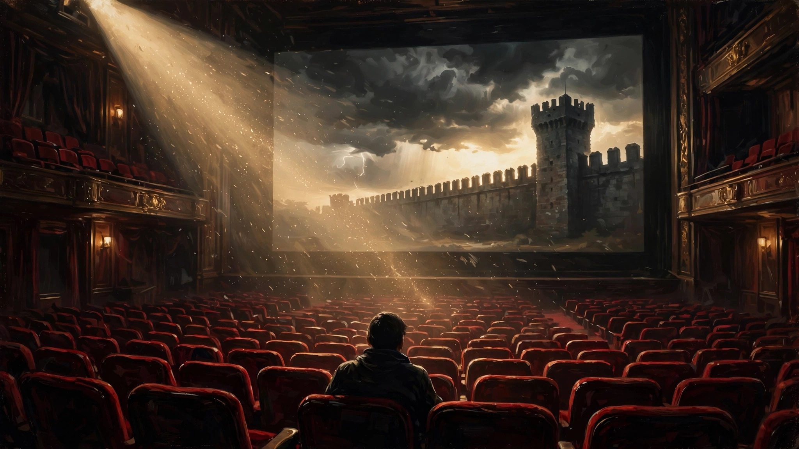
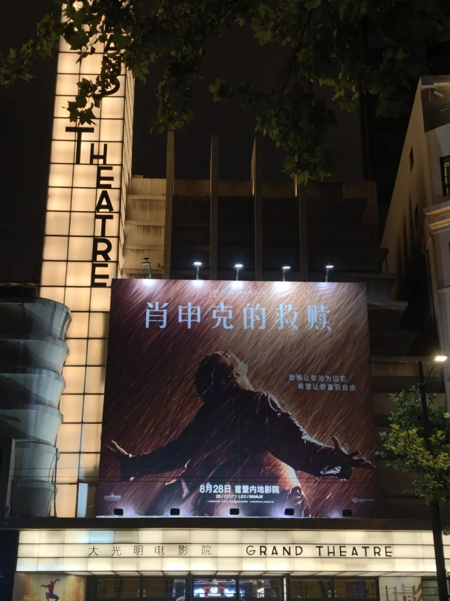
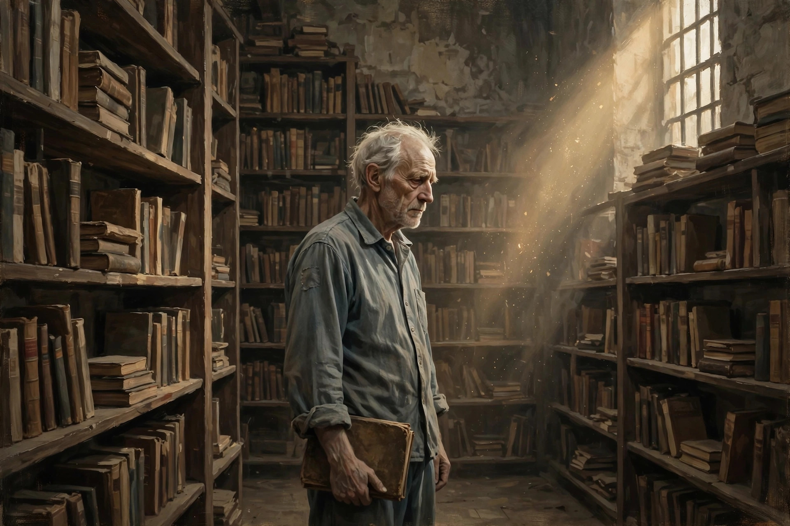

一次影迷的“朝圣”
欢迎点击上方名片关注我。您的支持是我坚持原创的最大动力。


（配图是我在上海老字号大光明影院拍的，这地方前段时间一度成为影迷的“打卡圣地”。但我不是在这家看的……）
今年暑期档佳片云集，新片如奥德赛（诺兰自我突破的巅峰），蜘蛛侠4（应该是漫威近年来口碑最好的一部），让人应接不暇。更让人惊喜的是今年老片重映环节的选片充分考虑了影迷群体的呼声，先是皮克斯动画的封神之作《机器人总动员》，再是全球无数影迷心中不可逾越的影史丰碑《肖申克的救赎》。无论你对现在的电影行业有多失望，这些经过时间考验的经典佳片都会让你想起电影艺术曾经到达的高度和创造的辉煌，也会让你对审美的回归重燃希望。我有幸在今年暑期档在电影院重温了这两部经典电影，既弥补了一刷时没机会去电影院欣赏佳片的遗憾，也完成了我作为一个普通影迷的“朝圣”。
《肖申克的救赎》上映于32年前，早已成为影迷的“圣经”，以至于很多人对片中的每个人物，每段情节，每句台词都能信手拈来如数家珍。所以今天聊这部电影也就无所谓剧透了。但我也接受之前一位留言朋友的批评，不想再写流水账式影评，而是有选择地讨论剧情，再谈谈自己的主观感受。
先来聊聊影片中几处令我印象深刻的一些部分或片段吧。
安迪被定罪后被押送到肖申克监狱。一个俯拍镜头缓缓掠过监狱上空。我们看到灰色的高墙，严密的铁丝网，荷枪实弹的黑衣警卫，最后看到运送犯人的囚车。这个场景的镜头调度非常令人压抑，让人预感到会有不好的事情发生。
果然，从安迪踏进监狱的那一刻起，影片就告诉你，前面阴森的第一印象不过是开胃菜，代入到新犯人的角色，你马上会见识到这座监狱如地狱般邪恶和阴暗的部分。
一位体型臃肿的年轻犯人，在来到肖申克的第一晚就情绪崩溃，可能他是被冤枉的（像安迪一样），也可能他想到一眼望不到头的失去自由的生活而感到无比绝望。总之熄灯后他情绪失控下大喊大叫了起来。他和狱友都没想到，他会这么快就可以“解脱”了。因为那个基因里刻着暴力的狱卒头子为了杀鸡儆猴，居然仅仅因为这件小事就活活打死了他。也许他原意并不是要打死那位犯人，只是碰巧那天监狱医生不在，犯人没法得到及时救治。但他的原意根本不重要，事实是，这一起故意杀人事件在肖申克就像没发生一样，除了成为第二天几位犯人吃饭时的短暂谈资外，就再也没有掀起任何水花。
通过这件事，我们对肖申克的可怕有了进一步认识，但这只是开始。冤狱不可怕，失去自由也不可怕，可怕的是，在这里没人在乎你是否无辜，也没人在乎你的死活。肖申克就像一个怪兽，你一旦被他吞噬，就会面临无穷无尽的黑暗，最终失去一切希望，要么如同行尸走肉般活下去，要么就无声无息地消失。
安迪安静地度过了第一晚以及最初的一些日子。这从侧面说明他心理素质相当过硬。也算为后来他的惊人之举埋了个伏笔。但仅仅心理素质过硬，不去惹事就可以在肖申克独善其身吗？不，你大错特错了，作为一个让你彻底丧失希望的地方，肖申克的暗黑能量远不止于此。
接下来安迪面临的是比入狱当天就被打死还要可怕和糟糕的事情。肖申克有三个极度变态的犯人，每当有新的犯人到来时，他们会从中物色看的上的对象，然后通过暴力威胁等手段，逼迫对方成为他们三人的性奴。因此他们得到一个恶心的外号“sisters”(三姐妹)。这次他们把目光投向了安迪。
虽然安迪长的高大强壮（原著中其实比较矮小），但奈何一对三力量太过悬殊，经过强烈反抗的他最终被迫屈服。Red 的旁白冰冷而残酷：我很想说没有发生这事，但这不是童话故事。
三姐妹的恶行狱卒们和典狱长不可能不知道。只不过他们根本不在乎犯人的死活而长期选择无视罢了。这也是肖申克这个地方可怕的一面，你知道这里是各种恶行的温床，但你根本没可能改变现状。
以上这些只是肖申克表面上的可怕，最可怕的是一种“温水煮青蛙”式的东西：体制化（institutionalized）。

影片通过一位在肖申克度过大半生的犯人Brooks的经历，充分解释了什么叫做制度化。Brooks由于入狱时有点文化，被分配管理肖申克监狱的图书馆。这工作虽然枯燥，但比狱中其他体力活轻松得多，也相对体面。这份工作他一做就是几十年，也和狱友们结下了深厚的友谊。但当他因年老获准保释出狱时，他一点高兴不起来，甚至走极端地想通过伤害一名狱友来换取加刑，好继续留在肖申克。
狱友们对他的想法和做法感到无法理解。出狱后，Brooks在政府的安排下找到住处和工作。一切听上去很完美对吧？可不久后，Brooks在住处的屋梁上刻下Brooks was here(老布到此一游)字样，然后自缢身亡。
是什么样的决绝让Brooks放弃出狱后的自由清闲生活而选择提前结束生命？是体制化带来的习惯。或者换个“现代”点的说法，是“舒适区”。Brooks大半生在肖申克度过，虽然长期失去自由，但久而久之这里居然成为了他的舒适区。所以最后虽然他重获自由，但离开了“舒适区”，反而终日不知所措，以至于最后选择轻生。
Brooks的故事可谓经典的黑色幽默。可以说他是“体制化”的众多受害者之一。而我们的主人公安迪，虽然蒙受冤狱，入狱后还惨遭身心上的严重伤害，但他偏偏不放弃对自由的向往和希望。凭着超越常人许多的胆识和毅力，他从入狱就开始着手逃离肖申克。他一边与狱友们正常互动，一边周密地计划、安排出逃。甚至在此期间还利用自己在金融方面的才能，帮典狱长和狱卒们搞财务规划（说大白话就是做假账），以此获得典狱长的青睐，换取相对更好的待遇。随着他为典狱长他们赚的钱越来越多，他在狱中的地位已和刚入狱时不可同日而语。安迪因而能够成功地借用狱卒的力量除掉了三姐妹这个“肖申克之瘤”，也算洗刷了一些耻辱。
日子过得很快，一转眼安迪来到肖申克快满20年了。如果是第一次看这个影片，观众会以为安迪的结局可能有两种，一是因表现良好而减刑获释，二是像Brooks那样在肖申克“体面”老去然后获得假释。但这都是善良的人们一厢情愿的想法。典狱长怎么可能轻易放过安迪这颗“摇钱树”呢？要不怎么说贪婪是七宗罪之一呢。（亏典狱长这个伪君子还开口闭口不离圣经）
我不知道安迪的原计划是怎样的，但接下来发生的一桩惨剧必定是这个计划的导火索。一位年轻的轻罪犯Tommy来到肖申克。他的刑期很短，正常情况一两年就可出狱。认识安迪并知道他的事迹后，Tommy深受启发，决心出狱后用知识改变自己的命运。但理想很远大，现实很骨感，他几乎是文盲。安迪倒是一点不怕麻烦，从ABC开始教Tommy。最后居然帮助Tommy考到了高中文凭。
这本来是很励志的一件事，没想到却以悲剧收场。Tommy在调来肖申克之前的监狱听到另一个连环杀人犯吹嘘过自己以前犯过的事。了解安迪的过往后，Tommy马上想起那个连环杀人犯提到的一个案件，正好和安迪的经历吻合。于是，Tommy把这事告诉了安迪。安迪据此向典狱长申请重审。但那个混蛋典狱长居然拒绝了，原因很简单，一方面是前面说过的贪婪，他觉得还远远没有利用够安迪，另一方面他也怕安迪出去后告发他洗黑钱的事。这还不够，他居然还心狠手黑地设计杀害了刚刚拿到高中文凭就要开始新生活的Tommy，以绝后患。
这件事对安迪的打击无疑是巨大的，也更加坚定了他逃离肖申克的决心。接下来就是计划实施的“名场面”了（见文首海报图），这里也不用赘述了。
不用讲，这部电影的内涵是极其丰富的，不同的人能从中得到不同的感悟和收获，这也是它能获得经久不衰的电影无冕之王桂冠的主要原因。
至于我个人，从这部电影里得到的最大感悟就是，自由是人生最宝贵的东西，包括身体上的自由和思想上的自由。如果我们安于呆在“舒适区”里，而忽略失去的自由，而且不去努力争取获得自由，最终就会沦为“体制化”的囚徒。当然获得自由的代价无疑是巨大的。但正如电影中安迪所说，希望是个好东西，保持希望才有行动的可能对吧。
知易行难，以此文自勉并与诸位读者共勉。